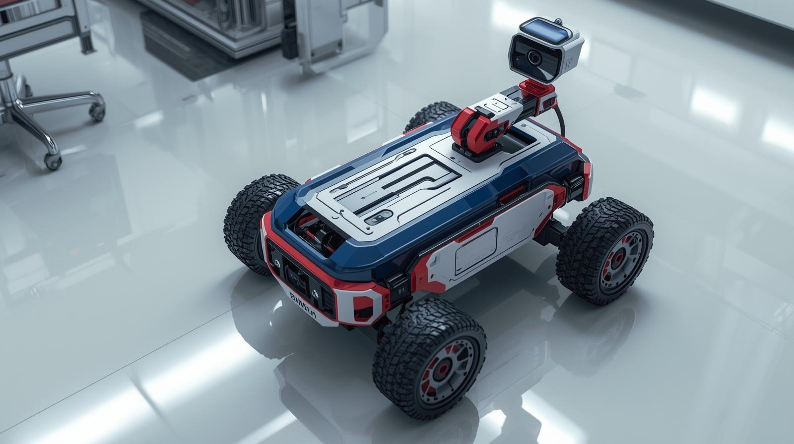

Proyecto VIGI-BOT

Propósito del Robot
El proyecto VIGI-BOT consiste en el diseño y construcción de un robot móvil de vigilancia capaz de desplazarse en entornos interiores y superficies semi-irregulares, transmitiendo video en tiempo real mediante conexión Wi-Fi.
Su propósito principal es permitir la inspección visual remota de espacios donde el acceso humano puede resultar incómodo o riesgoso, además de servir como plataforma educativa para el aprendizaje práctico de robótica móvil, sistemas embebidos, diseño 3D y comunicación inalámbrica.
Objetivo del Proyecto
Desarrollar un robot móvil de vigilancia con transmisión de video en tiempo real, utilizando un sistema de movilidad basado en cuatro ruedas todoterreno deformables, controlado remotamente mediante Wi-Fi para inspección y monitoreo en áreas de difícil acceso.